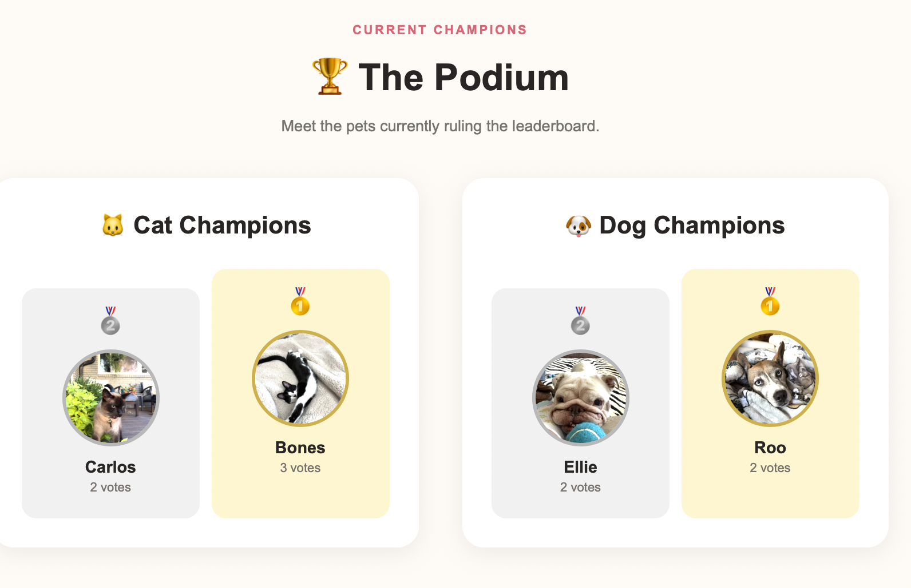
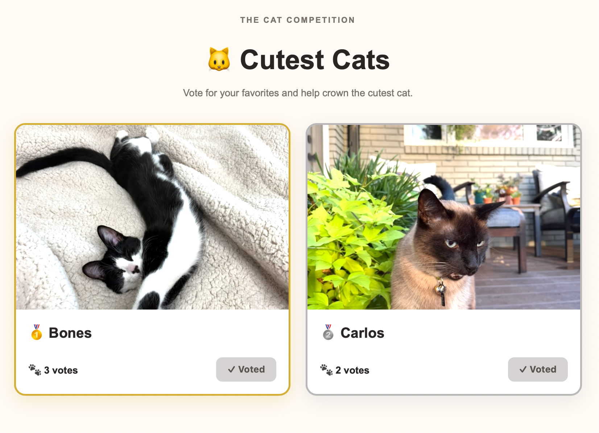

02 · WEB PROJECT
IN DEVELOPMENT
Cutest Pet
Think your pet is the cutest?

A community-driven web app where cats and dogs compete to be crowned the cutest. Users can upload their pets, vote for their favorites, and watch the leaderboard change as the competition unfolds.
📸 UPLOAD
→
🐾 VOTE
→
🏆 CROWN THE CUTEST
HOW IT WORKS →
Users choose the cat or dog competition, submit a pet photo, and vote for their favorites. Votes dynamically determine the rankings and current champions.
WHAT I BUILT →
Rather than a static website, Cutest Pet handles user-submitted images, voting, separate competition categories, and dynamically generated leaderboards.

